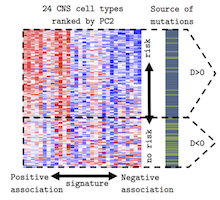
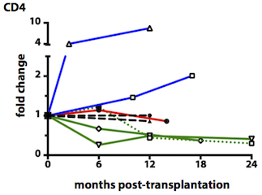

The Shen Lab at Columbia University studies human biology and diseases using genomic and computational approaches. We are interested in two broad questions: identify genetic causes of human diseases, and understand the dynamics of human adaptive immune system. To study these questions, we develop computational and statistical methods and analyze data generated by high-throughput genomic technologies.
Recent papers

A cell type-specific expression signature predicts haploinsufficient autism-susceptibility genes

Tracking donor-reactive T cells: Evidence for clonal deletion in tolerant kidney transplant patients